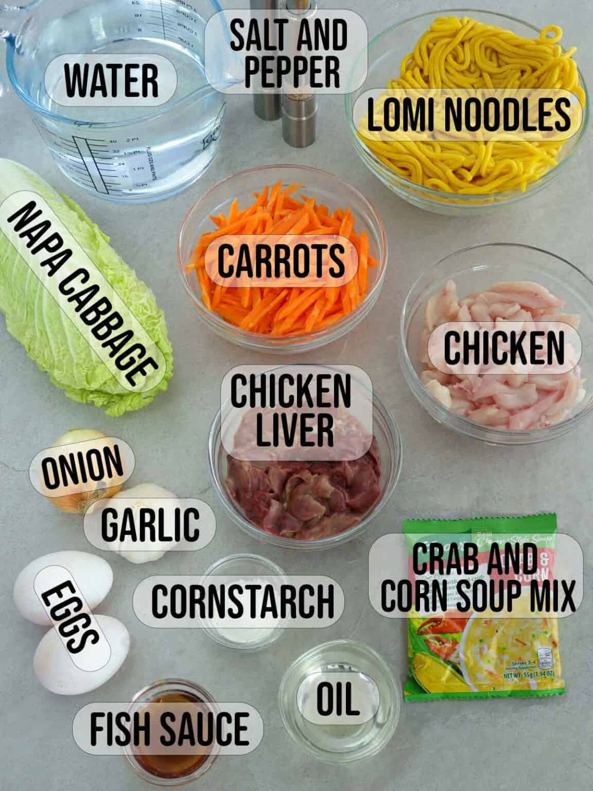

Pancit Lomi
★
★
★
★
★
This noodle dish originated in Lipa, Batangas, Philippines back in 1968. A bowl typically has thick egg noodles, pork liver, fish balls, and boiled eggs, all swimming in a thick broth and occasionally topped with chicharon and fried chili garlic.
Image source: https://www.kawalingpinoy.com/pancit-lomi/
Egg Noodles, Water, Cabbage, Carrots, Onion, Garlic, Diced Pork, Chicken Liver, Fish Balls, Eggs, Cornstarch, Oil, Fish Sauce, Salt and Pepper.

Image source: https://www.kawalingpinoy.com/pancit-lomi/
Step 1 - Blanc noodles - bring enough water to cover noodles to a boil in a pot. Add the noodles and quickly blanch for about 30 seconds or just until loosened. Drain well and rince in cold water. Set aside.
Step 2 - Pan-fry Liver - heat about a tablespooin of oil in a wide pan. Add liver and cook until lightlty browned and just about done. Remove from pan and keep warm.
Step 3 - Brown chicken - heat about a tablespoon of oil in a large pot and saute onions and garlic until softened. Add chicken and cook until lightly browned. Add fish sauce and continue to cook for about 1 minute.
Step 4 - Simmer - add about 8 cups of water and bring to a boil. Lower heat, cover, and simmer until chicken is cooked through
Step 5 - Cook noodles - add noodles and cook for about 1 to 2 minutes or until half done yet.
Step 6 - Pan-fry Fish Balls - In seperate fan, cook until lightly browned and just about done.
Step 7 - Cook - add liver and fish balls cook for about 1 minute. Add carrots and cook for about 1 minute. Add cabbage and continue to cook for about 1 minute or until vegetables are tender yet crisp.
Step 8 - Thicken - combine cornstarch and 1/4 cup cold water in a small bowl and stir to dissolve. Add the slurry to the pot, stirring well to prevent lumps, and continue to cook until the soup is slightly thickened
Step 9 - Add Eggs - slowly in a thin stream and allow to set slighty for about 10 to 15 seconds before stirring so you'll get nice ribbons of egg throughout the soup.

"Pancit Lomi is hearty, tasty, and the ultimate comfort food! Made with fresh egg noodles, pork, chicken, fish balls, and vegetables, it makes a great midday snack or dinner meal especially during very cold weathers."